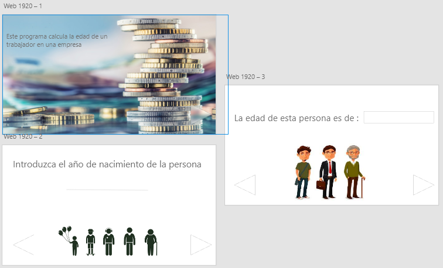
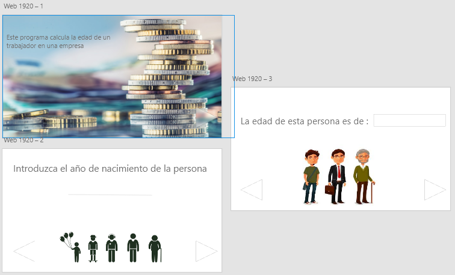
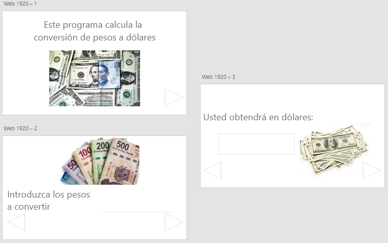
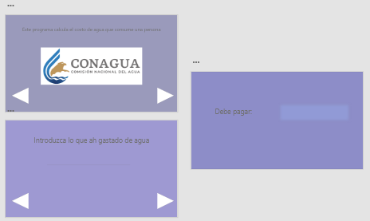
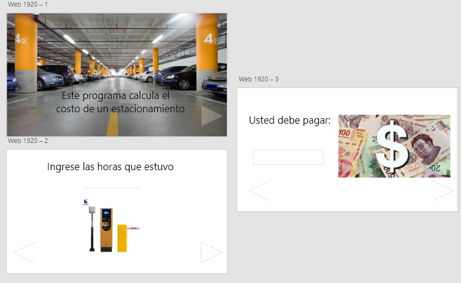
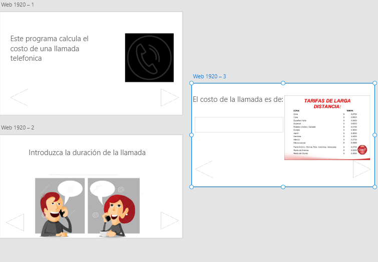

En esta sección te mostraré algunos ejemplos hechos en adobe xD
1.1 prototipo está diseñado para calcular el pago a trabajadores

1.1 prototipo está diseñado para calcular el pago a trabajadores

1.2 prototipo para hacer la ocnversion de pesos mexicanos a dolares 
1.3 Prototipo para saber el pago de el recubo de agua. 
1.4 prototipo deseñado para calcular de un estacionamiento. 
1.5 prototipo diseñado para saber el costo de una llamada telefonica. 